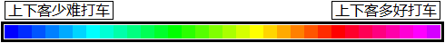

目前“路况交通眼”的打车指数服务区域仅限于北京。我们正在分析和调查其他城市的出租车数据，今后将提供更多城市的打车指数服务。
打车指数是统计一定区域内出租车的状况，经过分析计算得出的反应打车难易程度的指数。
本软件中，我们提供了基于您的当前位置的打车指数信息，它反应了您当前位置打车的难易程度。
在地图上长按某一位置，将显示该位置的打车指数，这样您可以查看到其他地点的打车指数信息。
打车指数通过五颗星表示打车的难易程度。五颗星表示很容易打到出租车，一颗星表示很难打到出租车。
一些特殊情况下，如您所在位置比较偏远，或者在凌晨时分，您周边出租车数量太少以至于无法计算出有效的指数时，也会表示为零颗星。
| 打车指数 | 含义 |
|---|---|
| 数据不足或者附近真的没有空驶出租车。 | |
| 还是果断去坐公交车吧。 | |
| 打车有点困难。 | |
| 需要稍微等一下才会有空车。 | |
| 很容易就能打到车。 | |
| 马上就会打到车。 |
北京世纪高通科技有限公司是中国专业的动态交通信息服务提供商，我们发布的动态交通信息的一部分数据来源即是出租车动态数据。
通过对这些动态数据的分析，不仅仅可以得到城市的路况信息，也为提供更好的出租车服务提供了可能性。
我们通过统计一定区域内空驶出租车和载客出租车的数量，结合城市范围内出租车的总体出勤情况，经过分析计算得出来反应打车难易程度的指数。
| 图标 | 含义 |
|---|---|
| 建议打车位置 |
建议打车位置，显示的是根据上一周的历史数据，经过统计计算得出的比较容易打到出租车的位置。
由于是统计意义上的位置点，所以表明该位置附近都相对容易打车，并非表明只有那个位置点才方便打车。
这个信息帮助您找到更好的打车地点。虽然现在站的位置打不到车，但是只要您走一小段路，就可以很容易打到车。
当然走过去的路上如果有空车就赶紧打了吧，不必非走到那个位置上啦。
出租车上下客热图，通过对出租车上下客位置的统计，绘制出来的热度图。
越“热”的位置，表明以往有大量乘客在该地点上车或下车，在那些位置更容易打到出租车；相反，越“冷”的位置，表明以往也较少乘客在那里上下车，出租车都呼啸而过了。
偏暖色的区域是“热”的区域，偏冷色的区域是“冷”的区域。

热度图是每小时更新的，上班好打车的地点未必是下班好打车的地点哦，实时查询才更加能帮到您。